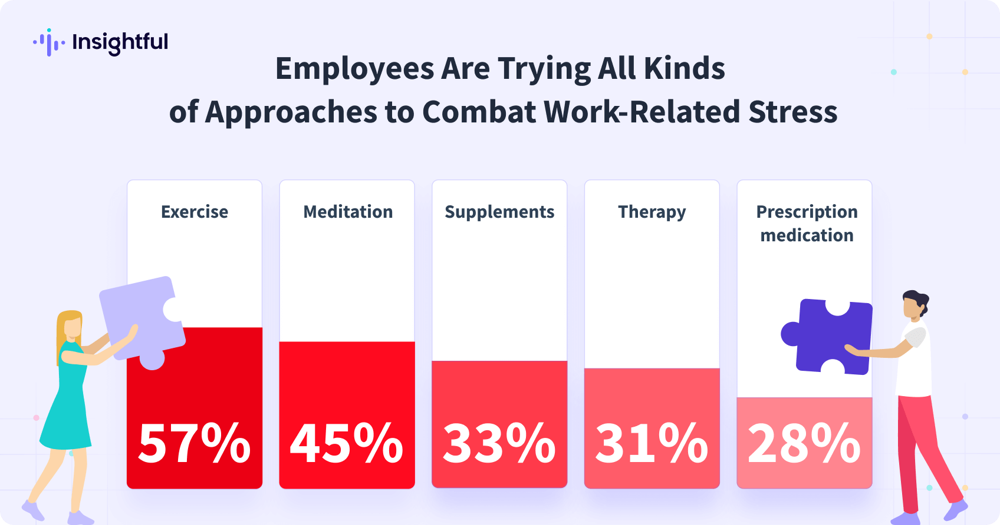

Why It Matters
|
Workplace stress doesn’t just impact how we work. It shapes how we think, interact, and even how we feel at the end of the day. Recognizing the signs early and taking small, intentional steps to manage stress can make a big difference. Simple habits like taking short breaks, setting healthy boundaries, or organizing priorities- help us regain control and create a healthier rhythm at work. |
How Employees are coping with Stress
|  Insightful (2024). Stress at Work Report. |
|